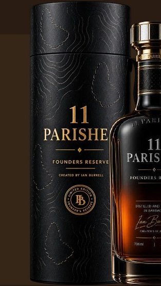
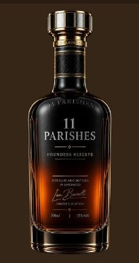

More than an investment. A place at the table.
A world of rum.
A community of founders.
Founded by 100. Built for a world of connections. The Founders Club connects people through exceptional rum, memorable experiences and meaningful relationships.

The story
Some people wait for the map. Our founders draw it.
They board the early flight and the late one. They build the company everyone said was too soon, and play the song before there is a name for the sound — the makers of culture and the builders of technology, who rarely sit at the same table.
So we set the table — with a liquid worth crossing an ocean for, on the island that made rum.
It takes an island. It takes one hundred founders.
1 · The club
Founded by 100. Grown by invitation.
A shared passion for rum, people and access — in two circles, one community.
Founders 100 — the originals
Permanently limited to the original one hundred investors. Permanent recognition as founding members, priority invitations and access to selected events, releases and Barbados experiences — and the people behind the liquid. Investment rights and benefits stay distinct from club benefits.
The Founders Club — by invitation
Subsequent members join the same international community — invited to tastings, gatherings, rum journeys and selected special releases. They are not designated Founders 100; the original hundred stay original forever.
2 · Experiences
Four ways the club gathers
Private Gatherings
Dinners, cocktail receptions and intimate tastings — the smallest rooms with the best company.

Barbados & Beyond
Island heritage, distilleries and cultural experiences, on the island that made rum.
Rum Adventures
Curated visits to festivals, bars and distilleries worldwide — the map, taken personally.

Meet the Makers
Masterclasses and access to leading bartenders, blenders and the hands behind the bottles.
Rum adventures · the calendar
Twelve journeys on the table
Five rum and cocktail experiences suggested by Ian Burrell, and seven more anchors from the house — all proposed: dates, venues, access and partners subject to confirmation, and nothing promised before it is agreed.
Miami Rum Congress
A weekend in Miami Beach — rum seminars, producer tastings and the Grand Rum Tasting, with visits to three local distilleries: The Little River Distillery, Miami Rum Club and Big Cypress Distillery.
Madeira Rum Festival
A trip built around the festival's local rum tastings and masterclasses, with a distillery visit. Ian is often at this one.
Tales of the Cocktail
Tastings, seminars and the city's great cocktail bars — with five rum distilleries close by.
The Mauritius rum trip
Distillery visits and guided tastings at Rhumerie de Chamarel and Domaine de Saint Aubin.
The Nepal rum trip
A small-group visit built around Khukri Rum — with a private distillery visit and tasting, if access can be arranged.
Home ground
The island gathering — distillery visits (subject to agreement), dinners, heritage and the festival itself. The one no member misses.
The builders' city
A founders night in San Francisco — dinner, tasting and the future flagship home, "Designed for builders."
Rum down under
A festival weekend with visits to Australian distilleries — from Queensland's cane country to the new wave.
UK RumFest
The festival Ian Burrell founded — tastings, industry access and a private founders gathering. Also the fourth 2027 flagship.
Jamaica
Rum heritage in festival season — the estates, the blenders and the music that carries it all.
Rhum Fest Paris
Europe's great rum weekend — tastings and masterclasses, with the city's cocktail rooms after dark.
The Tokyo bars
The world's best bar culture — masterclasses and a guided run of the great rooms, glass by glass.
3 · Upcoming events · 2027
Four flagship experiences
The 2027 programme starts with four, not twelve. All dates, venues, partnerships and activities remain subject to confirmation.
Washington DC
A private founders dinner, rum tasting and introductions in an early US market.
The Barbados Gathering
The flagship island gathering — distillery visits, dinners, heritage and Crop Over itself.
An Evening at the Castle
Peoria, Illinois — a castle-hosted reception and dinner, cocktails, guided tasting and founders networking.
UK RumFest
London — a rum-focused weekend with tastings, industry access and a private founders gathering.
RSVP and register-interest links follow with the live site.
4 · Founders network
The people at the table
Member connections, introductions and a private member area follow with the live site. Membership is by invitation; terms are shared privately, person to person — never on this page. To begin the conversation:
richard@11parishesrum.com
The club door and its sign-in follow with the live site.